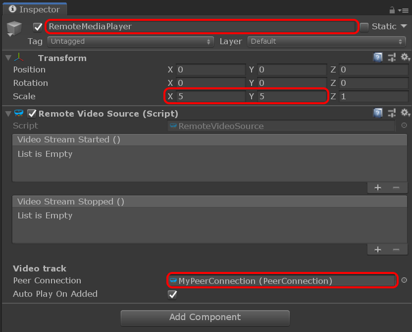

Adding remote video
Unlike local video, the remote video track is controlled by the remote peer who will decide if and when to add the track to the connection. On the receiver side, the only thing to decide is whether or not to handle that track.
The RemoteVideoSource Unity component is used to expose a remote video track. And similarly to the LocalVideoSource, it can be added to a MediaPlayer to render the content of the video feed.
Adding a remote video source
Like we did for the local video feed, we create a new game object with a RemoteVideoSource component:
- In the Hierarchy window, select Create > Create Empty.
- Rename it to something memorable like "RemoteMediaPlayer".
- Go to the Transform component and increase the scale to
(5,5,1). - In the Inspector window, press the Add Component button at the bottom of the window, and select MixedReality-WebRTC > RemoteVideoSource.
- Like the local video source, this component needs to know which peer connection to use. Once again, use the asset selection window to assign our peer connection to the Peer Connection property.

We note immediately that the remote video source is more simple than the local video source. Aside from the PeerConnection property we already assigned, the only other property is the Auto Play On Added boolean. This property instructs the component to immediately start playing back the video feed when the remote track is added to the connection and received locally. If this property is false, then the user needs to manually call Play() to start listening to incoming remote video frames.
Adding a remote media player
This is again similar to the local video source: the remote video source only exposes a video frame queue which gets populated using the video frames coming from the remote peer, but the component does not do any rendering by itself. Instead we can use again a MediaPlayer to render those frames. So let's create a new game object for it:
- Add a Mesh Filter component, a Mesh Renderer component, and a Media Player component.
- In the Mesh Filter component, set the Mesh property to the built-in Unity Quad mesh.
- In the Mesh Renderer component, expand the Materials array and set the first material Element 0 to the
YUVFeedMaterialmaterial located in theAssets/Microsoft.MixedReality.WebRTC.Unity/Materialsfolder. - In the Media Player component, set the Video Source property to the remote video source component previously created.
The Inspector window should now look like this:

At this point we need to fix a small issue : both the local and remote media player objects are at the same location.
- Change the Position of the local one to move it slightly to the left at
(-3,0,0). - Change the Position of the remote one to move it slightly to the right at
(3,0,0).
After that we should be able to see in the Game window our two pink squares representing the local and remote videos: